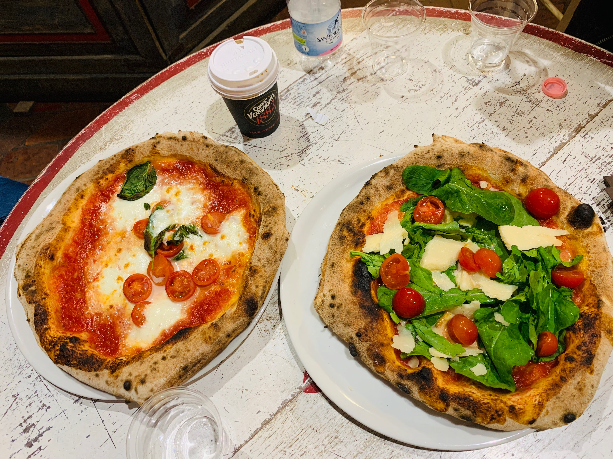
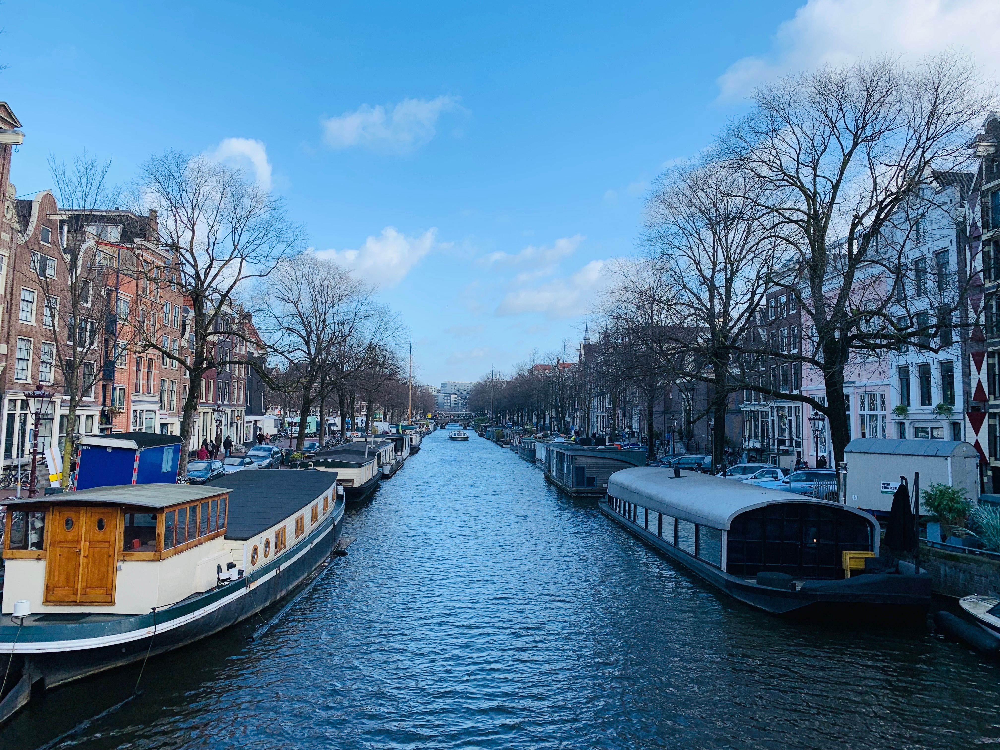
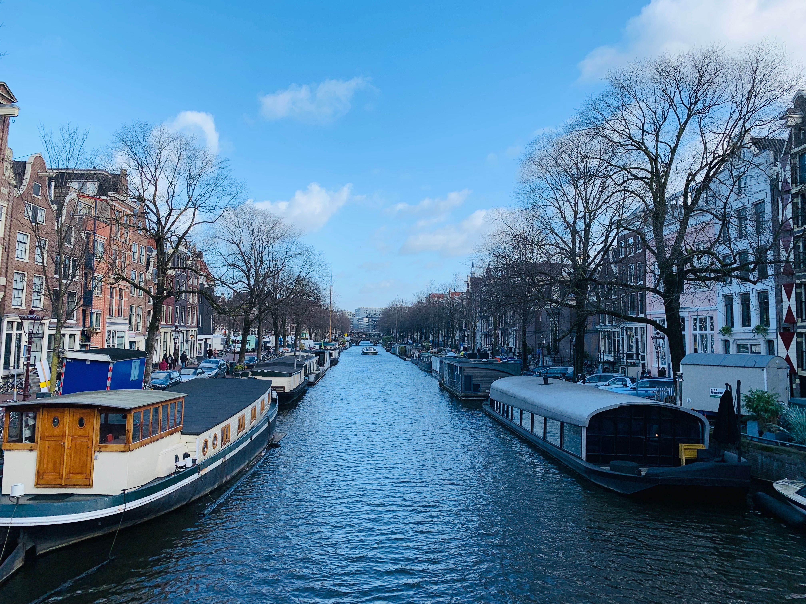
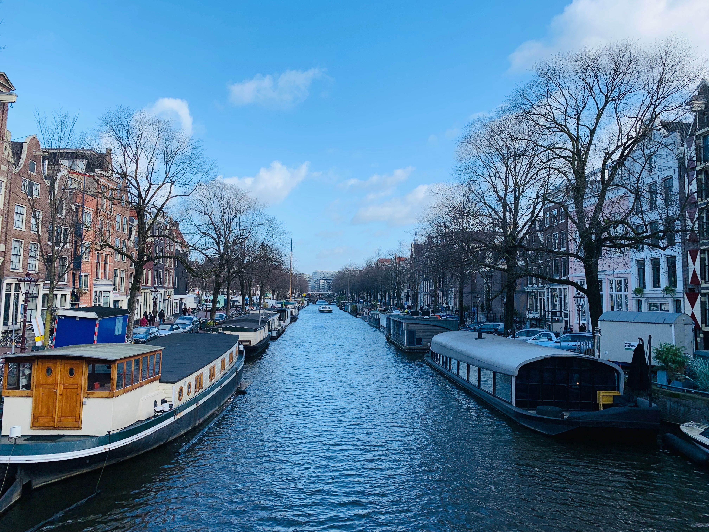

ABOUT ME

Hi! I’m a senior at the University of Michigan studying in the School of Information with a focus on User Experience Design. In addition, I am minoring in Entrepreneurship. I have a strong passion for helping others, and my major is one outlet that enables me to do so--by designing user interfaces for other people.
In my free time, I enjoy traveling, skiing, and trying new foods. I also enjoy tutoring younger students, ranging from elementary to high school. Take a look at some of my recent travel experiences below!

 


